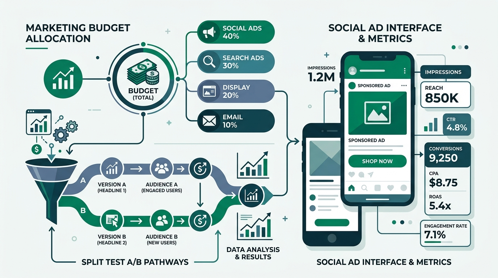

For performance marketers running paid acquisition campaigns on Meta (Facebook & Instagram), ad account architecture is everything. In my years of scaling e-commerce brands and lead generation funnels, the choice between Campaign Budget Optimization (CBO) and Ad Set Budget Optimization (ABO) is the single most important decision for campaign efficiency.
Many marketers make the mistake of choosing one methodology and applying it globally across their ad accounts. However, CBO and ABO are not competing features—they are complementary tools. When used together within a structured testing and scaling pipeline, they allow you to manage ad spend with surgical precision while leveraging Meta's powerful machine learning algorithms to maximize ROAS.
1. Understanding Campaign Budget Optimization (CBO)
Under Campaign Budget Optimization (which Meta now terms **Advantage Campaign Budget**), you set your daily or lifetime budget at the Campaign level. You then create multiple ad sets underneath that campaign, representing different target audiences (e.g., Lookalikes, Broad interest groups, or Retargeting pools).
Meta's algorithm automatically distributes your campaign budget in real-time across those ad sets. If Meta's systems predict that Ad Set A is more likely to yield a cheaper conversion than Ad Set B at any given second, it will route more budget to Ad Set A. This budget distribution is fluid and shifts dynamically throughout the day.
The Advantages of CBO:
- **Maximizes Total Conversions:** By shifting budget to the highest-performing audience in real-time, CBO ensures you get the maximum volume of sales or leads for your total budget.
- **Prevents Audience Fatigue:** If one audience starts experiencing creative fatigue and performance drops, Meta automatically diverts budget to other active ad sets.
- **Reduces Management Overhead:** Instead of constantly checking and adjusting bids manually, Meta's engine does the distribution heavy lifting for you.
2. Understanding Ad Set Budget Optimization (ABO)
Under Ad Set Budget Optimization (ABO), you set individual, isolated budgets for each ad set. Meta is forced to spend exactly the amount you specify on that particular audience, regardless of whether another ad set is performing better.
This gives you absolute control over ad spend. If you want to spend exactly $50/day on Retargeting, $50/day on Lookalikes, and $50/day on Broad targeting, ABO is the only way to guarantee that spend split. Meta cannot shift budget between them.
The Advantages of ABO:
- **Guarantees Fair Creative Testing:** In a CBO campaign, Meta will often look at historical data and dump 90% of the budget into a single ad set or creative within hours, leaving the other elements untested. ABO ensures every variable receives equal exposure.
- **Protects Smaller Audiences:** Retargeting audiences (like website visitors or add-to-carts) are much smaller than cold lookalike audiences. In CBO, Meta will ignore the smaller retargeting audience because it can't spend budget fast enough. ABO forces ad delivery to these high-converting, smaller pools.
- **Strict Control Over CAC:** If you have strict customer acquisition cost guidelines for different product lines, ABO allows you to budget separately.
3. The Winning Account Framework: Test with ABO, Scale with CBO
To build a scalable Meta Ads setup, you should separate your testing workflow from your scaling workflow. This is known as the **Sandbox/Scaling account architecture**:
Phase 1: The ABO Testing Sandbox
Create an ABO campaign dedicated to testing. Each ad set inside this campaign represents a single variable (e.g., Ad Set 1 = Image ads, Ad Set 2 = User-Generated Video, Ad Set 3 = Carousel ads). Assign an identical daily budget (e.g., $20/day) to each ad set. Let the campaign run until you reach a statistically significant volume of impressions. Identify the creatives that yield the lowest CPA or highest click-through rates.
Phase 2: The CBO Scaling Campaign
Create a CBO campaign with a large daily budget. Move your winning ad sets and ad creatives from the ABO testing campaign into this CBO campaign. Since these ads are already proven to convert, you can safely hand over budget control to Meta's machine learning. As you scale the overall CBO budget upward (by 10-20% daily), Meta will distribute the budget dynamically to maintain the highest overall efficiency, protecting your ROAS.
Summary & Best Practices
In summary, use ABO for testing new audiences and ad creatives, and for protecting small remarketing lists. Use CBO for scaling your proven winners. By organizing your ad account this way, you avoid wasting budget on unproven ads and give Meta's algorithm the space it needs to drive consistent, profitable growth.
Frequently Asked Questions
What is the difference between CBO and ABO in Meta Ads?
Campaign Budget Optimization (CBO) allocates the budget at the campaign level, letting Meta's machine learning distribute spend in real-time to the best-performing ad sets. Ad Set Budget Optimization (ABO) allocates budgets to individual ad sets, giving you absolute control over spend splits.
Should I use CBO or ABO for creative testing?
You should use ABO for creative testing. This ensures that Meta distributes budget equally across all your testing variables, rather than prematurely funneling all spend to a single ad set.
When is the best time to scale a campaign using CBO?
Switch to CBO when scaling proven, high-performing creatives and audiences. This allows Meta's algorithm the flexibility to shift budget dynamically to maintain high efficiency and protect your ROAS.